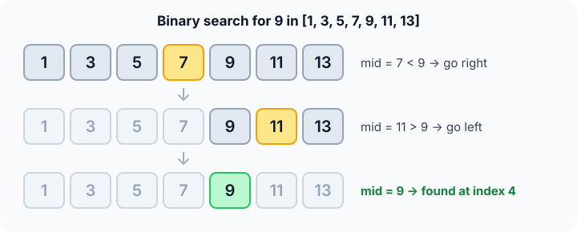

Prerequisites
- Sorted arrays and zero-based indexing.
- Linear search, the baseline to beat.
- Logarithms: $\log_2 n$ is how many times you can halve $n$ before reaching 1.
The analogy
Everyday analogy
Play "guess my number from 1 to 100" against a friend who says "higher" or "lower". The smart first guess is 50, because whatever the answer, half the numbers are gone.
Binary search plays that game on a sorted array. The middle element answers "higher" or "lower", and half the array disappears. Seven guesses are enough for 1 to 100.
How it works
Data requirement: the array must be sorted.
Start with one search by hand
Look for 9 in [1, 3, 5, 7, 9, 11, 13]. The range starts as indices 0 to 6. Guess first, then open "Check".
Example: predict before you read
Step 1. The middle index is 3, value 7. Predict: which half do you keep?
Check
7 < 9, so 9 can only be to the right. Keep indices 4 to 6.
Step 2. Cover the next line and guess: the middle of 4..6 is index 5, value 11. Where next?
Check
11 > 9, so go left. Keep only index 4.
Step 3. The middle of 4..4 is index 4. Predict the result.
Check
a[4] = 9: found at index 4 after 3 comparisons.

Quick recall: Before reading further, cover the text above and say out loud: what does one comparison with the middle element guarantee?
Check your answer
Either the target is found, or half of the remaining range is ruled out, because the array is sorted.
Finish the picture
Now search the same array for 4, which isn't there.
- Steps 1 and 2. 7 > 4, so go left to 0..2; the middle is 3. Predict where you go next.
Check
3 < 4, so go right: the range is index 2 only.
- Step 3. a[2] = 5. Predict: what happens to the range?
Check
5 > 4, so
hibecomes 1 whilelois 2. The range is empty, so return −1. Still only 3 comparisons.
Quick recall: Without scrolling up, say out loud: how does binary search know that 4 is missing?
Check your answer
The range shrinks until lo > hi. An empty range means no place is left where 4 could be.
The rule in plain words
Keep a range lo..hi where the target could be. Look at the middle. If it's the target, done. If it's too small, move lo past it; if too big, move hi before it.
When the range is empty, the target isn't there.
Quick recall: Before you read the code, write the three steps of one round in your own words. Then check below.
Check your answer
1. Look at the middle of the current range. 2. If it's the target, stop. 3. Otherwise keep only the half where the target could still be.
The code
Read this code after you have done one search by hand. It will make more sense.
int binary_search(const int a[], int n, int x) {
int lo = 0, hi = n - 1; /* x can only be in a[lo..hi] */
while (lo <= hi) { /* range not empty */
int mid = lo + (hi - lo) / 2; /* avoids overflow of lo + hi */
if (a[mid] == x) return mid;
if (a[mid] < x) lo = mid + 1; /* x is to the right */
else hi = mid - 1; /* x is to the left */
}
return -1;
}Definition
What you just did, in one line: binary search finds a target in a sorted array by comparing it with the middle of the current range and discarding the half that cannot contain it.
flowchart TD
A["lo = 0, hi = n - 1"] --> B{"lo <= hi ?"}
B -->|no| F["Return -1: not found"]
B -->|yes| C["mid = middle of lo..hi"]
C --> D{"compare a[mid] with x"}
D -->|equal| E["Return mid"]
D -->|"a[mid] < x"| G["lo = mid + 1"]
D -->|"a[mid] > x"| H["hi = mid - 1"]
G --> B
H --> B
How fast is it?
Quick recall: Before looking at the formula, predict: starting with 1,000 elements, how many halvings until one element is left?
Check your answer
About 10, because $2^{10} = 1024$.
Each comparison halves the range, so after $k$ comparisons about $n / 2^k$ elements are left. The search ends when that reaches 1:
$$\frac{n}{2^k} = 1 \;\Longrightarrow\; k = \log_2 n, \qquad \text{at most } \lfloor \log_2 n \rfloor + 1 \text{ comparisons.}$$For our 7 elements: $\lfloor \log_2 7 \rfloor + 1 = 3$, exactly what we used.
| Best | Average | Worst | Extra space | Data requirement |
|---|---|---|---|---|
| $O(1)$ | $O(\log n)$ | $O(\log n)$ | $O(1)$ | Sorted |
Warning
Off-by-one errors are the classic bug. Use lo <= hi together with mid ± 1. Writing lo = mid instead of mid + 1 can loop forever when lo and hi are neighbours.
Exam tip
"How many comparisons at most for $n$ elements?" Answer $\lfloor \log_2 n \rfloor + 1$: 10 for 1,000, 20 for 1,000,000.
Common mistakes
- Running it on unsorted data. It doesn't crash; it silently gives wrong answers.
- Computing
(lo + hi) / 2, which can overflow for huge indices; uselo + (hi - lo) / 2. - Updating with
lo = midorhi = mid, which never excludesmidand can loop forever.
Try it yourself
Exercise 1 (warm-up)
Search for 13 in [1, 3, 5, 7, 9, 11, 13]. Which elements do you compare with?
Hint
Start at index 3, then the middle of 4..6.
Answer
7, then 11, then 13: found at index 6 after 3 comparisons.
Exercise 2 (a bit harder)
A sorted array has 4,000,000 elements. What is the maximum number of comparisons binary search needs? Write your answer down before you open it.
Show answer
22. $2^{21} \approx 2.1$ million and $2^{22} \approx 4.2$ million, so $\lfloor \log_2 4{,}000{,}000 \rfloor + 1 = 21 + 1 = 22$.
Did you know?
Did you know?
Java's library binary search had the (lo + hi) / 2 overflow bug for about nine years, until Joshua Bloch reported it in 2006. Even experts get the details wrong.
Binary search is worth mastering because the idea, "halve the possibilities", reappears everywhere: guessing games, debugging with git bisect, and searching for the smallest value that makes a condition true.
Key points to remember
If you remember one thing from each line, remember the because.
- It needs sorted data because only order lets one comparison rule out a whole half.
- It is $O(\log n)$ because each comparison halves the range, and you can halve $n$ only $\log_2 n$ times.
- It stops with "not found" when
lo > hibecause an empty range leaves no place for the target. mid ± 1is essential becausemidhas already been checked and must leave the range.- Extra space is $O(1)$ because the loop version only keeps
lo,hiandmid.
Self-check questions
Answer these in order, out loud. They follow the page, so your answers become the script of your video.
- How is binary search like the "guess my number" game?
Sample answer
Guessing the middle means every "higher" or "lower" answer rules out half the numbers. Binary search uses the middle element of a sorted array the same way.
- Walk through a search for 9 in [1, 3, 5, 7, 9, 11, 13].
Sample answer
Middle 7 is too small, so go right; middle 11 is too big, so go left; middle 9 matches at index 4. Three comparisons.
- Why does the code compute
midaslo + (hi - lo) / 2?A good answer mentions what can go wrong with
lo + hi.Sample answer
For very large arrays,
lo + hican exceed the largestintand overflow to a negative number.hi - lonever overflows. - So what is binary search, in one sentence?
Sample answer
It searches a sorted array by checking the middle of the current range and keeping only the half that can still contain the target.
- Why does binary search only work on sorted data?
A good answer explains what one comparison tells you.
Sample answer
If the middle is smaller than the target, sorting guarantees everything to its left is smaller too, so that half can go. Without order, one comparison says nothing about the other elements.
- What are its best, average and worst cases?
Sample answer
Best $O(1)$ if the first middle is the target. Average and worst $O(\log n)$, at most $\lfloor \log_2 n \rfloor + 1$ comparisons. Extra space $O(1)$.
- How does binary search report that a value is missing?
Sample answer
The range shrinks until
lopasseshi. The range is then empty, and the function returns −1. - When would you still use linear search instead?
Sample answer
When the data is unsorted and you only search once, since sorting costs more than one linear scan. Also for tiny arrays, where linear search is fast enough and simpler.
- If you had to teach this to a friend in 2 minutes, what would you leave out, and why?
Sample answer
I'd leave out the overflow detail and the exact $\lfloor \log_2 n \rfloor + 1$ bound. I'd keep the guessing-game analogy, one search on the 7-element array, and "sorted data, halve each time, $O(\log n)$".
External resources
- Khan Academy: Binary search: an interactive lesson with the guessing game.
- GeeksforGeeks: Binary search: iterative and recursive code in several languages.
- Wikipedia: Binary search: variants, history and the overflow bug.
- MIT OCW 6.006 Introduction to Algorithms: lectures on searching sorted arrays.
Videos
- YouTube search: binary search explained: pick a short walkthrough.